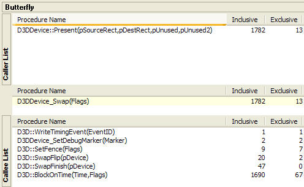

The Butterfly view displays the caller/callee relationship between the sampled functions.

The Butterfly view consists of three panes. The middle pane shows the function getting examined. The top pane, Caller List, shows the functions that call the function in the middle pane. The bottom pane, Callee List, shows the subroutines that the function in the middle pane calls. Users can move up or down the caller/callee hierarchy by clicking on functions in the Caller List, Callee List, or in the other views. Double-clicking on a function launches the Source File View and shows the source code for that function, if it is available.
The data in the butterfly view is sorted according to the order selected, either the TopX View or Call Stack View.